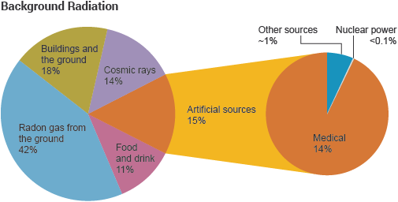

CORRECT!
Out of all the natural and the man-made sources of radiation, the Nuclear power Industry contributes the least to the total amount of radiation we receive every year. The chart speaks for itself! Adapted from http://www.world-nuclear.org.
The Nuke Quiz #1
Question 4
Which of these contributes least to the radiation exposure we receive every year?
